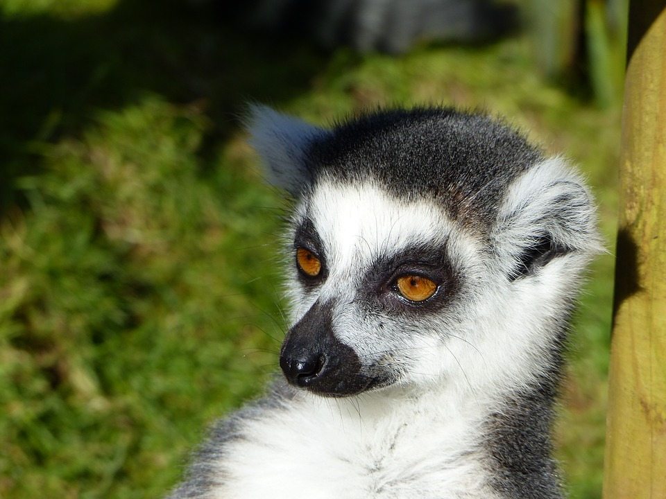

Lemur
A palavra lemur deriva da palavra 'lemures' (fantasmas ou espíritos) devido aos hábitos noturnos e passos lentos.
- Scientific Name: Lemuroidea
- Average Length: 6-70 centimentros.
- Average Lifespan: 16-20 anos.
- Habitat: ilha de Madagascar.
São dotados de focinho que lembra o da raposa, grandes olhos, pêlo lanoso, muito macio, e cauda geralmente longa e peluda. Apesar da aparência, os lêmures são animais mansos e sociáveis (em resumo, são fofinhos). São animais que levam o risco de entrar em extinção, pois o habitat está sendo destruido devido ao corte de árvores.